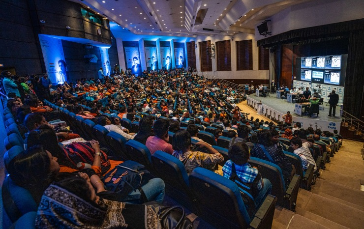
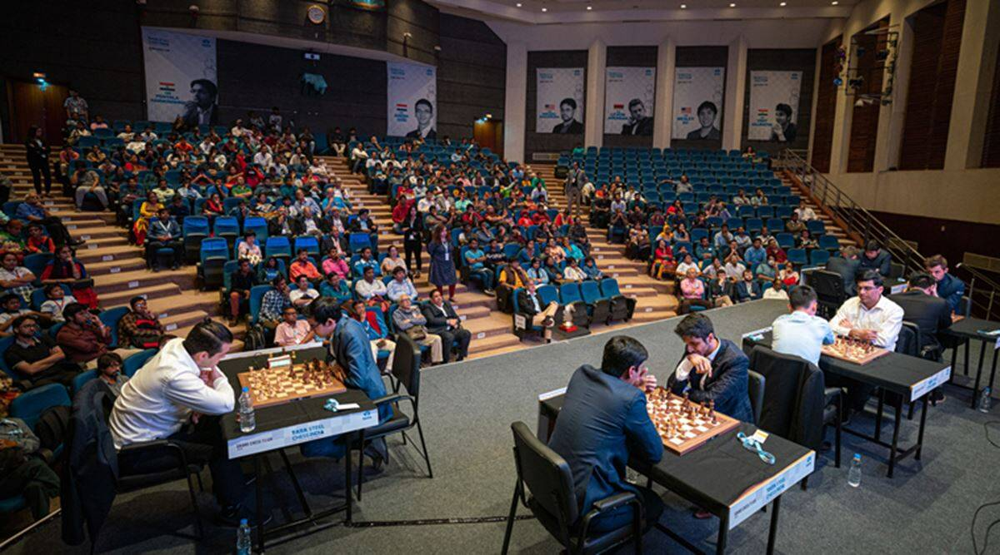
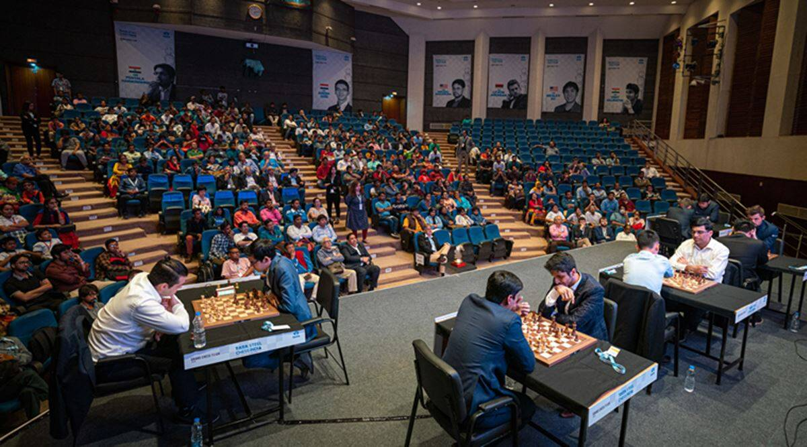
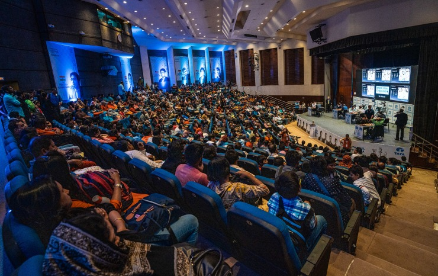
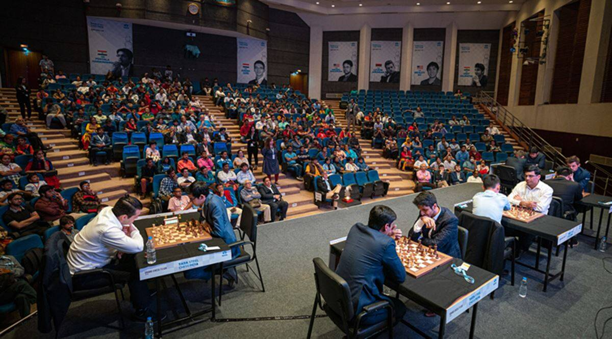

Training With Carlsen
Training With Carlsen merupakan salah satu training catur terbesar di dunia, dimana UKM Catur MaChung bekerjasama dengan Magnus Carlsen, top global catur dunia.
Sven Magnus Øen Carlsen (lahir di Tønsberg, 30 November 1990; umur 29 tahun) adalah seorang pecatur Norwegia dan Juara Catur Dunia. Pada tahun 2004 ia menjadi Grandmaster dalam usia 13 tahun 4 bulan. Ia memenangkan kejuaraan nasional pada tahun 2006. Pada tahun 2009, ia memenangkan turnamen London Chess Classic. Dalam daftar FIDE Januari 2009, ia memiliki rating Elo 2810, yang menjadikannya nomor 1 di dunia. Kemudian, dalam daftar rating FIDE pada Januari 2013, Carlsen memperoleh rating Elo 2861, mengalahkan rekor rating sebelumnya yang dipegang oleh Garry Kasparov, yaitu 2851 (diraih pada Juli 1999).[1] Pada November 2013, Carlsen mengalahkan Viswanathan Anand dalam Kejuaraan Catur Dunia 2013, menjadi juara catur dunia yang baru. Dia berhasil mempertahankan gelarnya pada November 2014, mengalahkan Viswanathan Anand.

Training diadakan dalam 2 sesi, yaitu sesi teori dan praktek. Pada sesi teori, Magnus Carlsen akan mengajarkan berbagai macam strategi yang dapat dipakai dalam permaianan catur, dari strategi menyerang hingga pertahanan.
 

Kemudian pada sesi berikutnya, peserta akan mendapat kesempatan untuk mempraktekkan teori yang telah diikuti. Jika seorang peserta beruntung, peserta akan mendapatkan kesempatan untuk bertanding secara langsung melawan Magnus Carlsen.
Daftarkan diri menjadi anggota sekarang dan raih kesempatan bermain dan belajar bersama Magnus Carlsen
Sven Magnus Øen Carlsen (lahir di Tønsberg, 30 November 1990; umur 29 tahun) adalah seorang pecatur Norwegia dan Juara Catur Dunia. Pada tahun 2004 ia menjadi Grandmaster dalam usia 13 tahun 4 bulan. Ia memenangkan kejuaraan nasional pada tahun 2006. Pada tahun 2009, ia memenangkan turnamen London Chess Classic. Dalam daftar FIDE Januari 2009, ia memiliki rating Elo 2810, yang menjadikannya nomor 1 di dunia. Kemudian, dalam daftar rating FIDE pada Januari 2013, Carlsen memperoleh rating Elo 2861, mengalahkan rekor rating sebelumnya yang dipegang oleh Garry Kasparov, yaitu 2851 (diraih pada Juli 1999).[1] Pada November 2013, Carlsen mengalahkan Viswanathan Anand dalam Kejuaraan Catur Dunia 2013, menjadi juara catur dunia yang baru. Dia berhasil mempertahankan gelarnya pada November 2014, mengalahkan Viswanathan Anand.

Training diadakan dalam 2 sesi, yaitu sesi teori dan praktek. Pada sesi teori, Magnus Carlsen akan mengajarkan berbagai macam strategi yang dapat dipakai dalam permaianan catur, dari strategi menyerang hingga pertahanan.
Kemudian pada sesi berikutnya, peserta akan mendapat kesempatan untuk mempraktekkan teori yang telah diikuti. Jika seorang peserta beruntung, peserta akan mendapatkan kesempatan untuk bertanding secara langsung melawan Magnus Carlsen.
Daftarkan diri menjadi anggota sekarang dan raih kesempatan bermain dan belajar bersama Magnus Carlsen